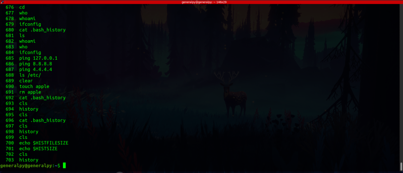

The linux shell stores previously written commands. This helps us to repeat our previous commands without writing them again.
There are 2 places where linux command history is stored :-
1. bash_history file : First storage is bash_history file which is store in user's home directory which can be accessed be ~. Maximum number of commands stored by it can be determined by HISTFILESIZE environment variable. By default it is 2000. bash_history file is a hidden file so its name is appended by .(dot).
Result of cat .bash_history :-
2. In memory storage / realtime storage : Second storage location is in memory. Here commands are stored in realtime. Maximum number of commands stored is determined by HISTSIZE environment variable. By default it is 1000. This can be accessed and manipulated by history command.
Result of history command :-
In display of history command, commands are numbered by when they were executed, number 1 comand first and so on.
Values of HISTFILESIZE and HISTSIZE.
Note :- .bash_history file is not updated in realtime, it is updated once user logs out. history command is updated in realtime.
Output of history command before logging out.

Contents of bash_history file before logging out
Contents of bash_history file after logging out and logging in
As we can see contents of bash_history file matches to history command after logging out and logging in again.
There is more to this file and in memory stuff please refer google to study more.
History navigation in shell :-
Up arrow key or Ctrl + p : Used to move up in the history
Down arrow key or Ctrl + n : Used to move down in the history
!! : Used to execute last used command
!<command_name> : Used to execute last executed instance on any command. Eg : !ping will run last executed ping command
!<line_number> : Used to execute command at line number in history. Line number can be negative which counts line number from bottom(like python list indexing).Eg: !34 will execute command at line 34 in history, !-7 will execute 7th command from the ending of history(not history file).
!<name or line number>:p : Used to print commands instead of executing them. Number or command name can be provided which will have effect like last 2 commands.
Ctrl + r : Enters into recall mode(kinda like search mode). After pressing this key combination enter name of the command you want to search and it will try to match your string with history. When you find the desired press Enter to execute it or Ctrl + Alt + p to place it in current line and then you can press enter to execute it. If you do not want to execute command or want to exit from recall mode you can use Ctrl + g to exit recall mode.
To delete history :-
history -d <line number> : Delete a particular line number from history.
history -c : To clear whole history.
How to complete bash history completely
HISTCONTROL environment variable : This variable controls which commands are stored in the history. It can have 4 different values :-
1. ignoredups : This value ensures that immediate duplicates are ignored in the history. If this option is set, then line same as there immediate previous line are not stored in history.
History with ignoredups unset, note how 3 cd commads are there consecutively
History with ignoredups set,note how cd wasn't recorded 2 times as they were 2 immediate duplicate of each other
2. ignorespace : Causes line starting with white space not to be included in history.
History with ignorespace unset, note how cd and echo commands beginning with whitespace are recorded
History with ignorespace set, note how cd command is not stored in history
This technique can be used to type commands anonymously, without a record of them in history.
3. ignoreboth : Mixture of ignorespace and ignoredups, default in ubuntu.
4. erasedups : It allows all lines matching from current line to be deleted before the line is saved.
erasedups is set here
I''ll write cd command again which is already there in history.
Note how previous instance of cd is removed.
Note :- Setting environment variables in current terminal is temporary, if you restart the terminal their values will be reverted to default. To save your values, you have to save them in .bashrc file present in user home directory. More on this later.
Record date and time in history :-
HISTTIMEFORMAT environment variable determines the format in which time is shown in history. By default it is empty in my Ubuntu.
Empty HISTTIMEFORMAT
We can set its value to display time and date in history.
History before and after setting HISTTIMEFORMAT
In HISTTIMEFORMAT format, d stands for date, m for month, y for year and T for time. % is used to denote that they are variables.